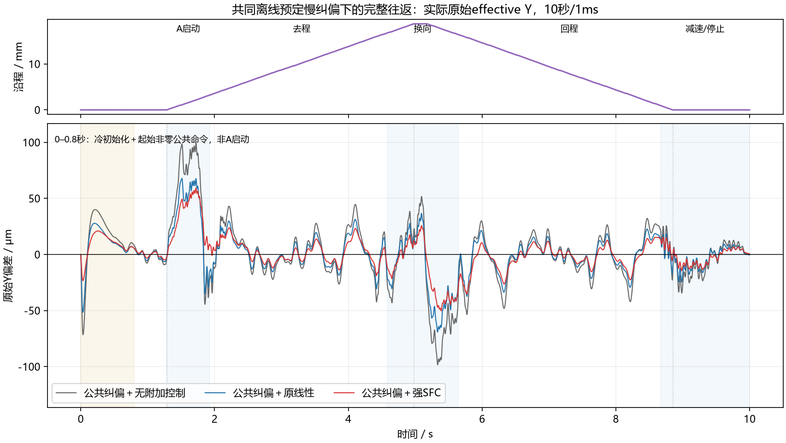
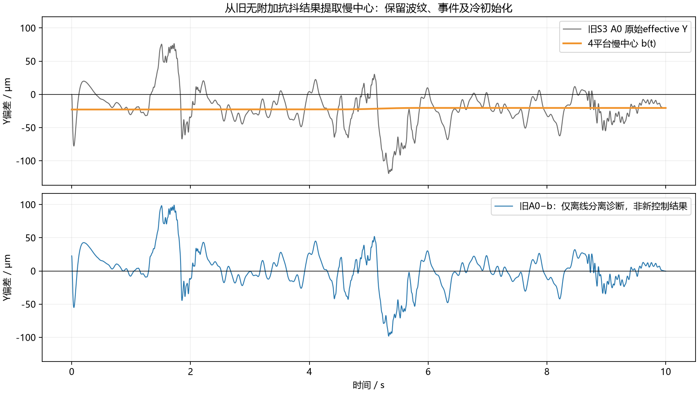
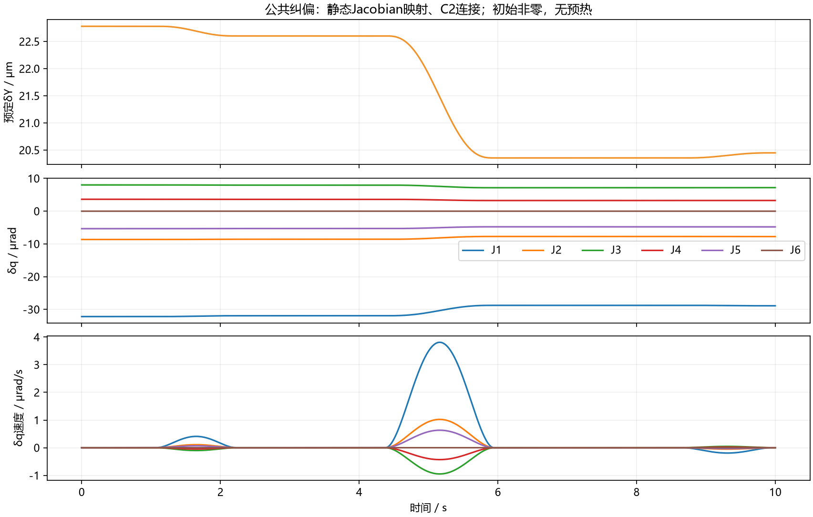
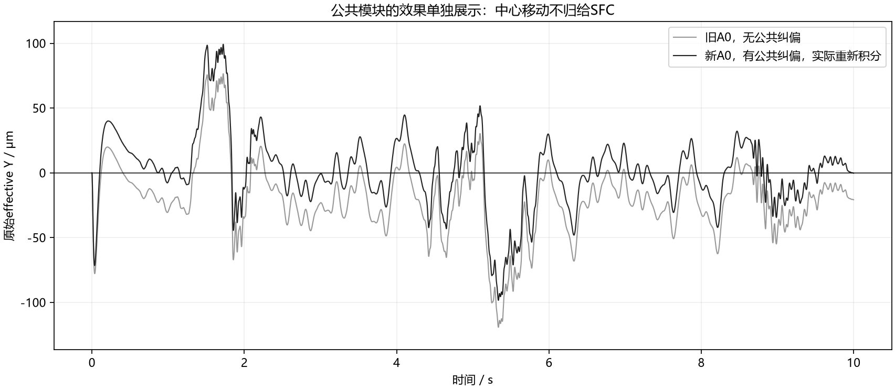
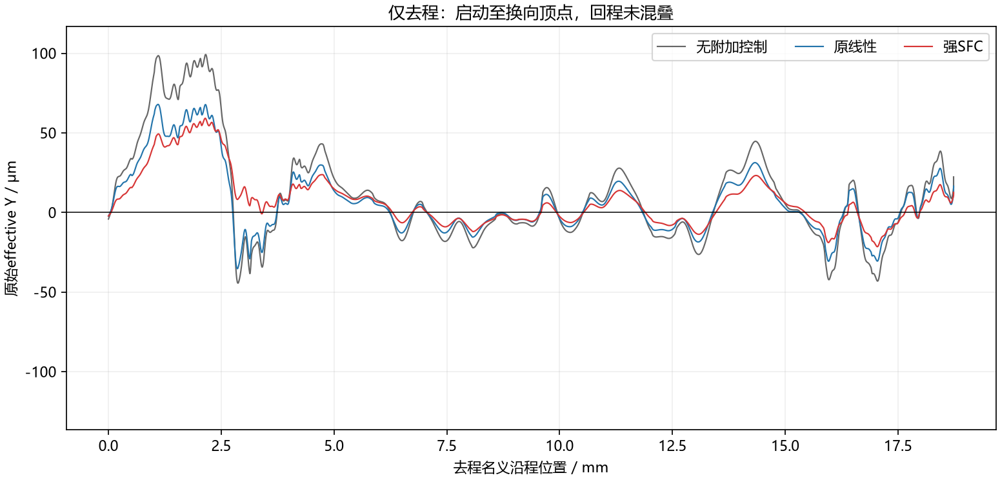
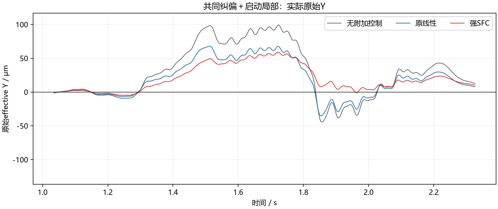
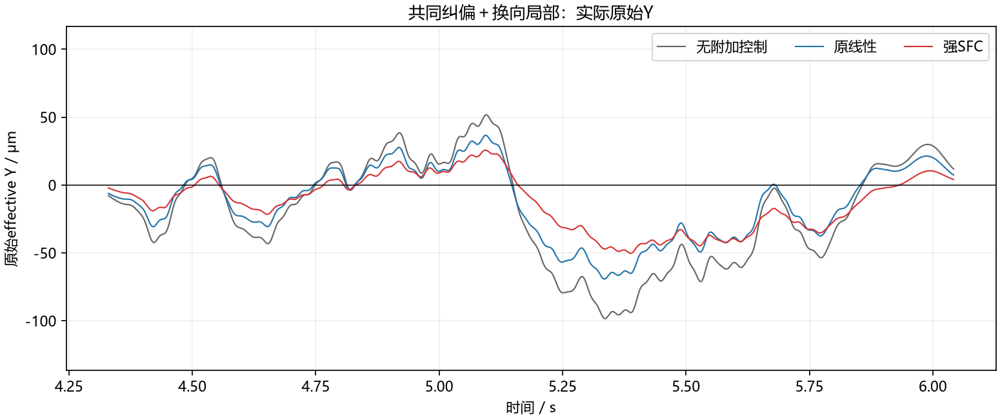

3条新运行；原输入全部保留；先A0构造，再冻结共同位置纠偏，最后比较三方案。主图真实重新积分、未减均值。
停后仅最后50ms短代表，不证明长期稳定。离线非因果假设不是在线漂移算法；初始非零纠偏及冷瞬态已保留。
| 方案 | 标准差 μm | 峰峰 μm | 均值 μm |
|---|---|---|---|
| 无附加控制 | 28.46 | 199.80 | 1.33 |
| 原线性 | 19.85 | 140.62 | 0.88 |
| 强SFC | 16.58 | 119.26 | 0.98 |
原始physical Y与effective Y分开统计；源头remaining及导数保留。






